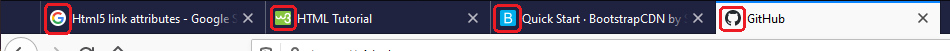
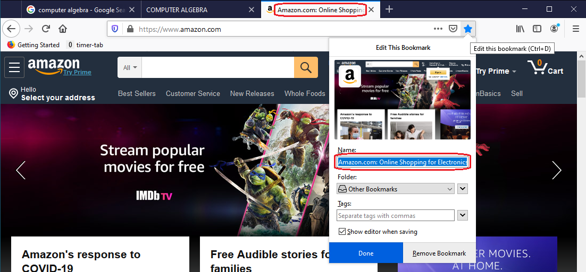

This is a practice file - it will not be turned in nor graded. It is for you to learn from and experiment with.
What tags can I use in the head tag? Compared to those you can use in the body tag, there
are very few tags you can use in the head tag. Here is a short list:
base - to set a base URL from which other relative URLs will start from
link - to pull in external CSS files containing CSS stylesheets for your web page
meta - to specify meta data about your web page
noscript - to pull in different stylesheets in case the browser does not support
JavaScript, or the user has disabled JavaScript on the browser. The script tag can appear
in both the head and body tags. If used in the head tag, the noscript tag can only contain
meta, style, and link elements.
script - to either enter JavaScript code, or to pull in external JavaScript files
(via the src attribute) that your web page will use.
style - to specify CSS stylsheets for your web page
title - to give your webpage a title
To check that a webpage is using one of these elements, right click on the webpage and select View page source from the context menu that appears.
The link element is used to create a link with an external resource. The href attribute is used to provide the URL of the external resource. The rel attribute is used to specify the type of relationship between the current webpage and the external resource. The type attribute specifies the media type of the linked external resource.
The common attributes of the link element are:
A common use of the link tag is to import a stylesheet. This is done by
setting rel="stylesheet", type="text/css", and setting href to the URL of
the stylesheet. An example is shown below:
<link rel="stylesheet" type="text/css"
href="https://stackpath.bootstrapcdn.com/bootstrap/4.4.1/css/bootstrap.min.css">
Another common use of the link tag is to specify an icon that will be used to
display on tab displaying the webpage. The icon is typically small (64px x 64px).
An example is shown below.
<link rel="icon" type="image/x-icon" href="/favicon.ico">
You can specify more than one icon, where each icon is a different size, by
also specifying the sizes attribute. An example is shown below:
<link rel="icon" type="image/png" sizes="96x96" href="/themes/mit/assets/favicon/favicon-96x96.png">
<link rel="icon" type="image/png" sizes="16x16" href="/themes/mit/assets/favicon/favicon-16x16.png">
The image below shows some icons used by some webpages, as they are shown in the FireFox web browser: 
Most webpages use link elements, so there is no need to give specific examples here.
The meta tag is used to provide meta information about the web page.
The attributes of the meta element are:
The name and content attributes are frequently used together. Furthermore, the http-equiv and content attributes are also frequently used together.
The meta tag can be used to tell anyone (or any program reading the webpage)
what character set is being used to create the webpage. We do that with the
charset attribute.
<meta charset="UTF-8">
Here we are indicating that the webpage is written using the Unicode
character set. There are many other possiblities other than "UTF-8", see
the list compiled by the Internet Assigned Numbers Authority (IANA)
here.
Be aware that browsers do not support every possible character set.
The meta tag is frequently used to give a description of the webpage.
For this, one uses the name="description" attribute value, and sets the
content attribute to a string which contains a description of the webpage.
For example, one might use the following meta tag for a webpage about model trains:
<meta name="description" content="This webpage is all about model trains, how
to build them, how to create landscapes for the model trains to drive through,
how to paint them, and everything else concerning model trains.">
The meta tag can also be used to provide keywords, to indicate to search
engines what the webpage is about. For example, one might use a meta tag
similar to the following to provide keywords about a webpage about various
kinds of sushi:
<meta name="keywords" content="raw fish, sushi, sashimi, uramakizushi, onigiri, makizushi">
However, people in the past abused this and would use many irrelevant keywords.
It is now believed that search engines don't use the meta keywords to rank
webpages (at least Google doesn't, see here).
The meta tag can be used to provide the name of the person(s), program or company that
created the webpage. Of course, you should have only one such meta tag in your webpage.
Examples:
<meta name="author" content="Johnny B. Goode">
<meta name="author" content="Leroy Brown, Jim Walker, Jim Croce">
<meta name="author" content="FrontPage">
<meta name="author" content="Acme Co.">
The meta tag can also be used to redirect the user to another webpage after a
designated number of seconds. For that, you use the http-equiv attribute and
set the content to content="n; url=urlToRedirectTo", where n
is a positive integer indicating how many seconds to wait before redirecting
the user, and urlToDirectTo is the URL of the webpage the browser will redirect to.
An example is shown below:
<meta http-equiv="refresh" content="5; http://www.alibris.com">
The script element is used to write JavaScript within a webpage, or to pull in an external file that contains JavaScript. In the past, it was possible to also use VBScript in a webpage, but VBScript is no longer supported.
Most webpages use the script element, so there is no need to give specific examples here.
The style element is used to add "embedded" stylesheets to a webpage.
Most webpages use style elements, so there is no need to give specific examples here.
The title element is used to give a webpage a title. The title typically appears on the
tab containing the webpage. Some web browsers, like FireFox, will use the title as the
default name for a webpage that is book marked. The user is, however, allowed to change
the book mark name. In the following image, you see how FireFox is using the title of
Amazon's webpage as the default name for the bookmark:

There is not much you can do to give a title a "snazzy" look. About all you can do is add character entities to the title (like &, ™, † etc.)
Most webpages use the title element, so there is no need to give specific examples here.